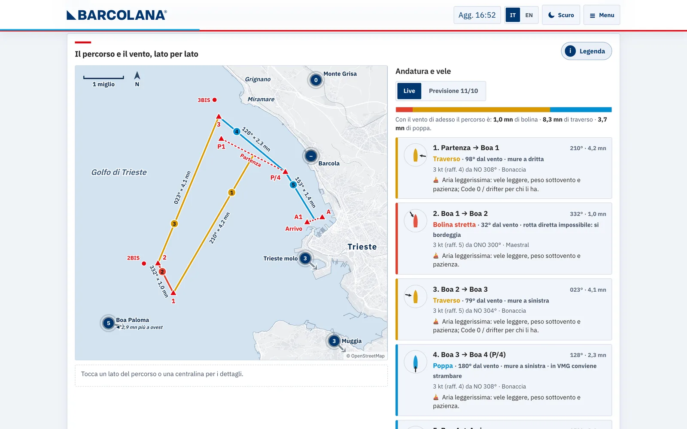
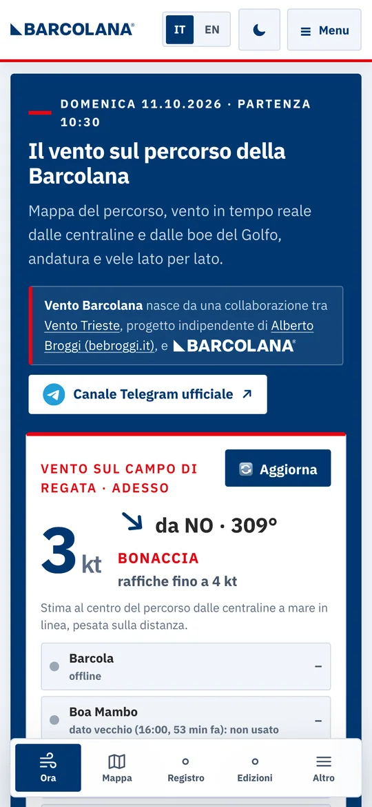

Apri la pagina ↗Nuovo · Ottobre 2026 · Con Barcolana
Vento Barcolana
Barcolana mi ha chiesto uno strumento per la settimana della regata. Il risultato: la mappa del percorso con il vento in tempo reale dalle centraline e dalle boe del Golfo, andatura e vele lato per lato. Costruito su VentoTrieste.info, in collaborazione con Barcolana.